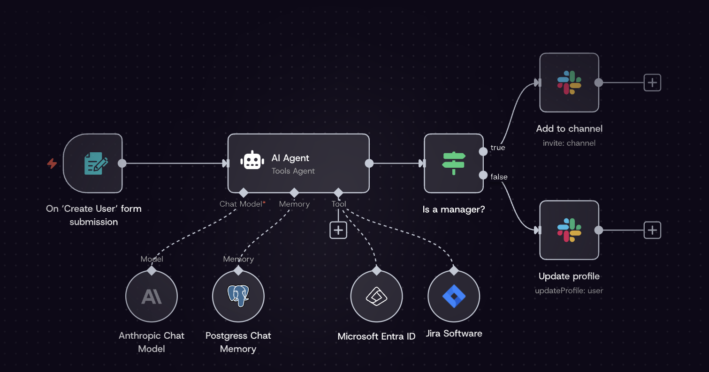
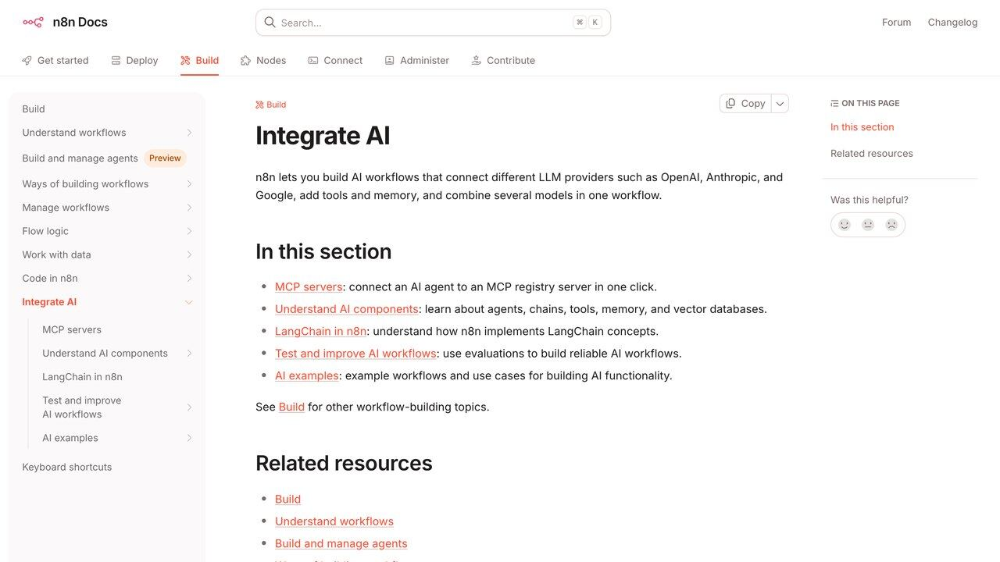

n8n y IA: automatización visual sin código paso a paso
Un lienzo visual de cajas conectadas por flechas, en vez de escribir un prompt cada vez. Cómo montar tu primer flujo real con IA integrada, y cuándo esta herramienta gana a pedírselo todo directamente a un agente de chat.
Nuestra guía sobre automatizar tareas con agentes de IA parte de escribirle instrucciones a un modelo dentro de una conversación. n8n resuelve un problema distinto: qué hacer cuando la automatización necesita conectar cinco servicios distintos, ejecutarse todos los días a la misma hora sin que tú la dispares, y seguir funcionando aunque cambies de portátil o cierres la sesión. Es la diferencia entre pedirle algo a un asistente cada vez que lo necesitas y montar una tubería que corre sola en segundo plano.
n8n es una plataforma de automatización visual: en vez de escribir código, arrastras y conectas "nodos" —cada uno representa un servicio, una condición o una acción— sobre un lienzo. Es de código abierto, puedes alojarla tú mismo de forma gratuita o usar su versión en la nube por suscripción, y desde 2025 tiene soporte nativo para nodos de IA (modelos de lenguaje, memoria de conversación, agentes con herramientas) integrados directamente en el mismo lienzo donde ya conectas tu correo, tu CRM o tu hoja de cálculo.
El nombre viene de "node to node" (de nodo a nodo), y la propia comunidad de la herramienta ronda ya los doscientos mil seguidores en GitHub, una cifra que por sí sola no prueba nada sobre si te conviene, pero sí confirma que no es un proyecto de nicho abandonado: hay documentación abundante, una comunidad activa resolviendo dudas y actualizaciones frecuentes con soporte para los modelos de IA más recientes en cuanto salen.
Qué es exactamente un nodo y por qué importa
Cada nodo en n8n hace una cosa concreta: recibir un formulario, leer una fila de una base de datos, enviar un mensaje a Slack, preguntarle algo a un modelo de IA. Los conectas con flechas para formar un flujo de trabajo (workflow) que se ejecuta de principio a fin cuando algo lo dispara: una hora programada, un correo nuevo, un formulario enviado, una petición HTTP desde otra aplicación. La ventaja frente a escribir un script tradicional es que ves visualmente por dónde pasan los datos en cada paso, y puedes ejecutar el flujo nodo a nodo para depurar exactamente dónde falla algo, sin añadir líneas de print() por todo el código.
n8n distingue tres grandes familias de nodos. Los disparadores (triggers) son siempre el primer nodo del flujo y determinan cuándo arranca: por calendario (cada hora, cada lunes a las nueve), por evento externo (un correo, un mensaje en un formulario web, un webhook que otra aplicación llama), o de forma manual mientras pruebas. Los nodos de acción son la mayoría del lienzo: conectan con más de cuatrocientos servicios ya integrados (Gmail, Slack, Notion, bases de datos, hojas de cálculo) además de nodos genéricos para cualquier servicio con una API HTTP normal. Y los nodos de lógica (condicionales, bucles, divisores, fusionadores) deciden por qué rama sigue el flujo según los datos que van llegando, igual que un if en cualquier lenguaje de programación, pero dibujado como una bifurcación visual en vez de código.

En ese ejemplo real, el nodo "AI Agent" no es un simple paso de "pregunta y respuesta": tiene acceso a un modelo de lenguaje (Anthropic), a memoria persistente (una base de datos Postgres que recuerda conversaciones anteriores) y a herramientas externas (Microsoft Entra ID para gestión de usuarios, Jira para tickets). El agente decide él mismo, dentro del flujo, cuál de esas herramientas usar según el caso — exactamente el mismo concepto de nuestra guía sobre qué es un agente de IA, pero orquestado visualmente en vez de en una conversación de texto.
Tu primer flujo, paso a paso
El ejemplo más simple y útil para empezar: recibir un correo, resumirlo con IA y guardar el resumen en una hoja de cálculo. Así se vería montado:
[Trigger: Nuevo correo] → [Nodo IA: Resumir en 3 frases] → [Nodo: Añadir fila a Google Sheets]
- Elige el disparador (trigger): el nodo "Email Trigger" (IMAP) revisa tu bandeja cada minuto y arranca el flujo cuando llega un correo nuevo que cumple el filtro que definas.
- Conecta el nodo de IA: el nodo "Basic LLM Chain" o "AI Agent" recibe el asunto y cuerpo del correo como variables automáticas, y tú escribes la instrucción una sola vez ("resume este correo en tres frases en español, sin rodeos").
- Guarda el resultado: el nodo de Google Sheets (o Airtable, Notion, una base de datos) recibe la salida del paso anterior y añade una fila nueva, sin que tengas que copiar y pegar nada a mano.
- Activa el flujo: un interruptor en la esquina superior lo pasa de modo prueba a modo producción, corriendo solo en el servidor de n8n aunque cierres el portátil.
Cada nodo de IA necesita una credencial de un proveedor de modelos (OpenAI, Anthropic, Google, o un modelo local vía Ollama) configurada una sola vez y reutilizable en todos tus flujos futuros. n8n no cobra por el uso del modelo en sí — eso lo facturas directamente con el proveedor cuya clave conectaste, aparte de tu suscripción a n8n si usas la versión en la nube.
Un detalle que ahorra frustración la primera vez: los datos que pasan de un nodo a otro viajan en formato JSON, visible en un panel lateral en cada paso de la prueba. Si el nodo de IA no encuentra el campo que esperaba (por ejemplo, el asunto del correo llegó vacío porque el filtro del disparador era demasiado amplio), ese panel te lo muestra de inmediato, en vez de fallar en silencio varios pasos más adelante sin pista de dónde se rompió la cadena.
Un caso real: clasificar tickets de soporte antes de que lleguen a una persona
Una tienda online pequeña recibía entre 40 y 60 correos de soporte al día, todos mezclados en la misma bandeja: devoluciones, dudas de envío, quejas urgentes y preguntas genéricas que ya respondía su página de preguntas frecuentes. Antes de automatizar nada, una persona dedicaba la primera hora de cada mañana solo a leer y repartir esos correos al departamento correcto.
El flujo que montaron en n8n hace ese primer triaje solo: un disparador de correo lee cada mensaje nuevo, un nodo de IA lo clasifica en una de cinco categorías predefinidas y extrae el número de pedido si aparece en el texto, y un nodo condicional reparte el resultado — las quejas urgentes van directas a un canal de Slack con una mención al responsable de turno, las preguntas genéricas reciben una respuesta automática con el enlace a la sección relevante de la web, y el resto se etiqueta y espera en la bandeja para revisión humana en el orden de prioridad que asignó el modelo.
El resultado no fue "cero personas gestionando soporte": siguió habiendo una persona revisando y respondiendo caso por caso. Lo que cambió fue que esa persona empezaba el día con los correos ya ordenados por urgencia real en vez de por orden de llegada, y las preguntas genéricas —que eran casi un tercio del volumen diario— dejaron de ocupar tiempo humano en absoluto. El flujo completo, incluido el nodo de IA y las cinco ramas de decisión, ocupa menos de quince nodos en el lienzo.

n8n frente a pedírselo directamente a un agente
La pregunta que más nos hacen sobre esta herramienta es simple: si ya puedo pedirle a Claude o ChatGPT que automatice algo, ¿para qué necesito otra plataforma encima? La respuesta depende de dos factores: quién dispara la tarea y cuántos servicios distintos hay que conectar.
| Situación | Mejor opción | Por qué |
|---|---|---|
| Tarea puntual, la disparas tú al pedirla | Agente de chat | No necesitas nada corriendo en segundo plano; con la conversación basta. |
| Debe ejecutarse sola, todos los días, sin que estés presente | n8n | El flujo vive en un servidor propio, no depende de que tengas una ventana de chat abierta. |
| Conecta 4 o más servicios distintos con lógica condicional entre ellos | n8n | Ver el flujo completo en un lienzo es mucho más fácil de mantener que una cadena de instrucciones en texto. |
| Necesitas razonamiento flexible sobre archivos o código en el momento | Agente de chat | n8n ejecuta pasos predefinidos; un agente de terminal como Claude Code improvisa sobre la marcha. |
En la práctica, muchos equipos usan ambos a la vez: un flujo de n8n que corre de fondo conectando sistemas, y que en un paso concreto delega en un modelo de IA la parte que requiere criterio (clasificar, resumir, decidir) antes de devolver el control al flujo estructurado.
Hay un matiz adicional dentro de n8n mismo: el nodo "AI Agent" no es lo mismo que el nodo "Basic LLM Chain". El segundo es una llamada simple —le pasas un texto, el modelo responde, fin del paso—, útil para tareas de un solo turno como resumir o traducir. El primero, en cambio, puede decidir por sí mismo usar una o varias herramientas conectadas (buscar en una base de datos, consultar una API externa, incluso ejecutar otro flujo de n8n como subrutina) antes de dar una respuesta final, en un bucle de razonamiento con varios pasos internos. Usar un "AI Agent" para una tarea que solo necesita una llamada simple es gastar más tokens y tiempo de ejecución de los necesarios; usar un "Basic LLM Chain" para una tarea que de verdad requiere consultar varias fuentes antes de decidir se queda corto.
Dónde alojarlo y qué cuesta de verdad
n8n es de código abierto bajo una licencia propia (Sustainable Use License): puedes autoalojarlo gratis en tu propio servidor o incluso en tu ordenador para pruebas, sin límite de flujos ni de ejecuciones, con la única condición de que no lo revendas como servicio a terceros. La alternativa es la versión en la nube gestionada por la propia empresa, de pago, que te ahorra mantener un servidor pero factura por número de ejecuciones mensuales.
Gratis sin límite de uso, pero tú mantienes el servidor (actualizaciones, copias de seguridad, tiempo de actividad). Requiere algo de comodidad técnica inicial con Docker.
Sin mantenimiento propio, listo en minutos desde el navegador. Factura por ejecuciones mensuales; el plan gratuito de prueba es limitado en el tiempo.
El coste real de un flujo con IA no es la licencia de n8n, sino el consumo de tokens del modelo que conectaste — el mismo principio que explicamos en nuestra guía sobre cómo no descubrir la factura al final de mes. Un flujo que llama a un modelo grande en cada ejecución, ejecutado cientos de veces al día, puede acumular un gasto que sorprenda si no lo revisas con el panel de uso de tu proveedor de IA cada semana.
Si decides autoalojarlo, la vía más simple es Docker: n8n publica una imagen oficial que arranca con un único comando y expone la interfaz en tu navegador en el puerto que elijas, sin instalar dependencias sueltas en tu sistema operativo. Para un uso personal o de un equipo pequeño, un servidor modesto en la nube (el más barato de cualquier proveedor habitual) es más que suficiente para correr decenas de flujos simultáneos, siempre que ninguno procese volúmenes masivos de datos en paralelo. Solo cuando el volumen de ejecuciones crece mucho —miles al día— conviene plantearse una instancia más potente o repartir la carga entre varios workers, algo que n8n soporta de forma nativa en su modo de cola.
Errores típicos al empezar con n8n
Activar el flujo antes de probarlo paso a paso
n8n permite ejecutar el flujo completo en modo prueba, nodo por nodo, viendo el resultado exacto de cada paso antes de activarlo en producción. Saltarse esa prueba es la causa más común de flujos que fallan en silencio durante días antes de que alguien note que algo iba mal.
No poner límites al nodo de IA dentro de un bucle
Si el flujo procesa una lista de cien correos y cada uno llama al modelo de IA, son cien llamadas facturables cada vez que se ejecuta. Añade un límite o un filtro antes del nodo de IA cuando proceses lotes grandes, en vez de descubrir el coste al final de mes.
Guardar credenciales sensibles directamente en el nodo
n8n tiene un gestor de credenciales cifrado independiente de cada nodo; usarlo siempre en vez de escribir claves de API a mano dentro de un nodo de código evita que esas claves queden expuestas si exportas o compartes el flujo con alguien.
Construir un flujo enorme antes de probar la primera parte
Es tentador dibujar los quince nodos del flujo completo antes de ejecutar nada. Es mucho más eficaz construir y probar de tres en tres nodos, confirmando que los datos llegan con el formato esperado en cada tramo, porque un error de formato al principio del flujo se multiplica y se hace más difícil de rastrear cuanto más lejos viaja sin detectarse.
No fijar un formato de salida al nodo de IA
Si el nodo siguiente en el flujo espera un dato concreto (una categoría de una lista cerrada, un número, un JSON con campos fijos), pídele al modelo explícitamente ese formato exacto en la instrucción. Sin esa restricción, la respuesta del modelo varía de forma sutil entre ejecuciones y rompe el nodo siguiente justo cuando menos lo esperas.